01 Qué quisimos hacer
El proyecto consistía en crear una distribución Linux live personalizada que arrancara desde un USB o máquina virtual, con un conjunto de herramientas de diagnóstico de redes, seguridad defensiva, recuperación de discos y análisis del sistema. Todo con nuestra propia identidad visual en pixel art.
La entregamos en versiones. Empezamos con algo sencillo (v8, construida con Cubic) y fuimos añadiendo cosas o reparando lo que no funcionaba. La versión final es la v20, que además incluye el bloque de seguridad ofensiva y robótica que pedía la nueva guía del profesor.
danielsson (contraseña: root). Arranca directamente en escritorio XFCE con tema Catppuccin Mocha.
02 Herramientas que usamos
Aquí está todo lo que utilizamos para construir el proyecto, tanto software como webs de referencia:
-isohybrid-apm-hfsplus que hace que Parallels arranque.03 Cómo lo construimos, paso a paso
Fase 1 — Empezamos con Cubic (v8)
Al principio el enunciado nos daba libertad de herramienta. Buscamos qué se usaba normalmente para personalizar ISOs de Debian y encontramos Cubic. Tiene una interfaz gráfica que te abre un chroot y puedes instalar paquetes directamente. Parecía ideal.
Instalamos Cubic en la VM de Debian, seleccionamos una ISO base de Debian 13 y empezamos a instalar los paquetes del enunciado: wireshark, nmap, tcpdump, gparted, lynis, etc. Añadimos los wallpapers y el tema Plymouth.
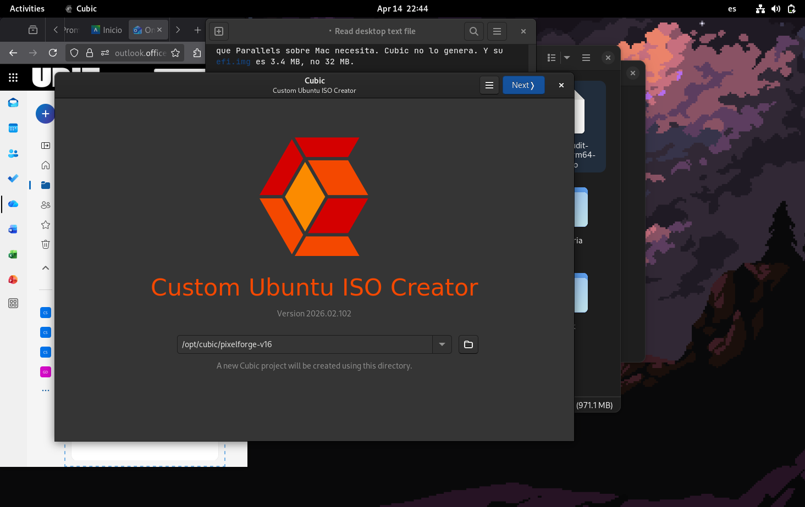
El resultado fue la v8: 797 MB, arrancaba en QEMU, llegaba al login. Pero cuando la probamos en Parallels Desktop, pantalla negra. No arrancaba.
Fase 2 — Diagnóstico: el bug del efi.img
Investigamos bastante. Analizamos los logs de boot, comparamos nuestra ISO con otras ISOs de Debian conocidas por arrancar en Parallels, y revisamos la documentación de xorriso y el bug tracker de Debian Live hasta encontrar la causa.
Encontramos el problema: Cubic genera un efi.img de 32 MB. El problema es que el campo Ldsiz del El-Torito catalog es de 16 bits, así que el máximo es 65535 bloques (cada bloque = 512 bytes = 32 MB exactos). Pero como no cabe, el valor se queda en 0.
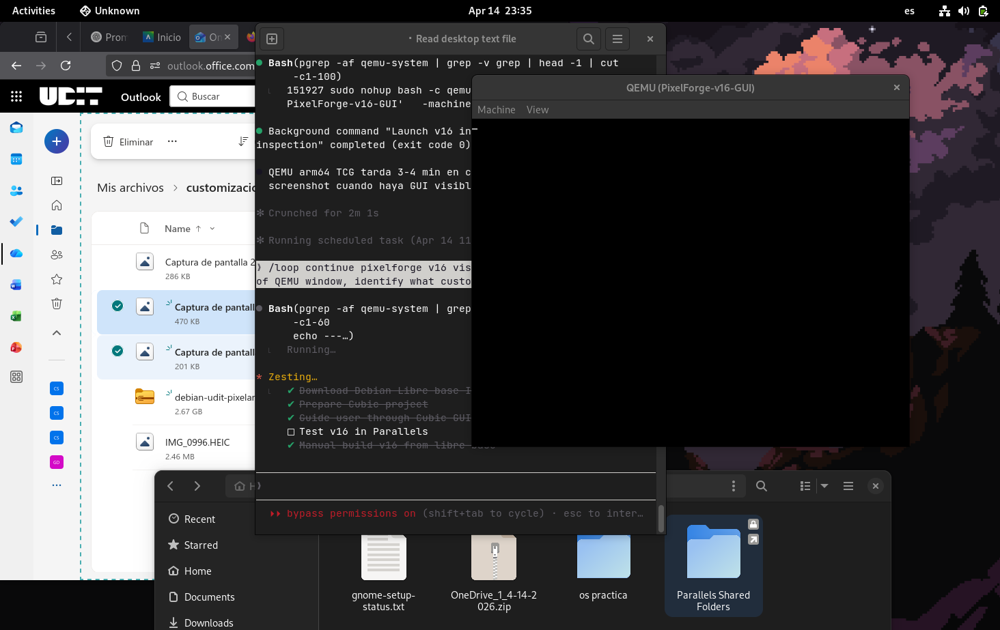
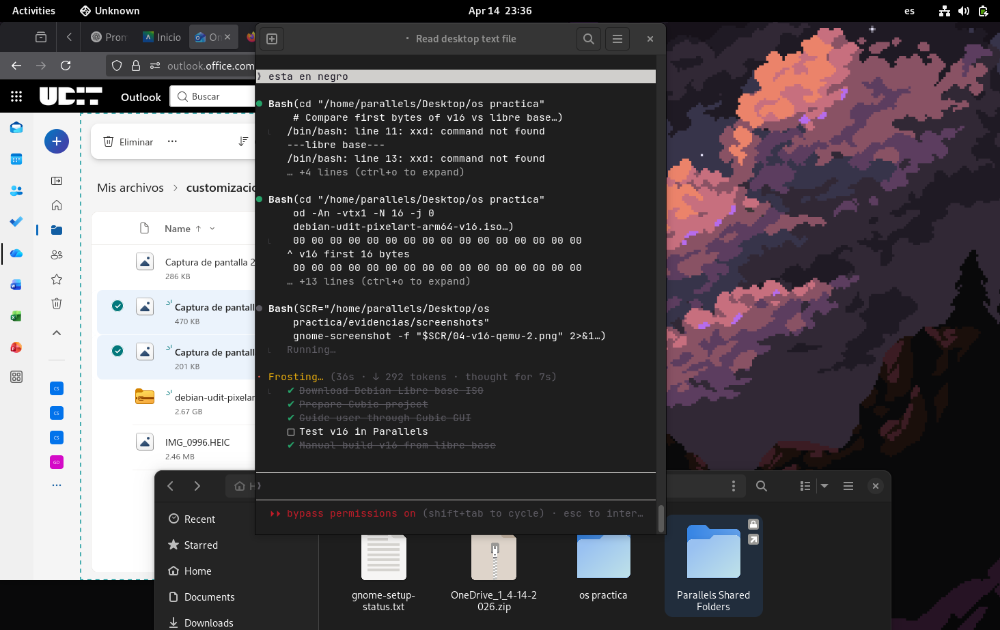
El Torito boot img : 1 UEFI y none 0x0000 0x00 0 63El
Ldsiz=0 significa que Parallels Desktop no sabe cuánto cargar y rechaza el arranque silenciosamente. QEMU es más permisivo y lo ignora.
efi.img de solo 3.4 MB (Ldsiz=6848, valor válido) y el flag -isohybrid-apm-hfsplus que Parallels necesita. A partir de ahí construimos todo manualmente.
Fase 3 — Rebuild manual desde libre.debian.net (v16)
Descargamos debian-live-13.3.0-arm64-libre-xfce.iso como base. El proceso era: extraer el squashfs → hacer chroot → instalar paquetes → reempaquetar el squashfs → generar la ISO con xorriso.
Extrajimos el comando exacto de xorriso del fichero .disk/mkisofs de la libre ISO para usarlo nosotros:
xorriso -as mkisofs -R -r -J -joliet-long -l -cache-inodes -iso-level 3 \ -V "DEBIAN_UDIT_EDITION" \ -e boot/grub/efi.img -no-emul-boot \ -isohybrid-gpt-basdat \ -isohybrid-apm-hfsplus \ -append_partition 2 0xef boot/grub/efi.img \ -o debian-udit.iso binary/
El flag clave es -isohybrid-apm-hfsplus. Añade un Apple Partition Map al ISO. Parallels sobre Apple Silicon lo necesita. Cubic nunca lo genera.
El Torito boot img : 1 UEFI y none 0x0000 0x00 6848 63 — Ldsiz válido. Esta ISO ya arranca en Parallels.
Fase 4 — Problemas de contenido post-arranque (v16 → v18)
Una vez que arrancaba, aparecieron otros problemas. Los listamos todos porque fueron varios:
-
1XFCE se trababa al iniciar. La sesión crasheaba nada más cargar el escritorio. Causas:
xfce4-sessionse había removido por unapt autoremove,light-lockerse activaba encima del escritorio y parecía un segundo login, ycalamares(el instalador) arrancaba solo en el autostart. Solucionamos reinstalando xfce4-session, purgando light-locker y eliminando calamares del autostart. -
2Plymouth no mostraba nuestra imagen. Pusimos un PNG de 7.4 MB como boot splash — demasiado grande para el initramfs. No cargaba bien. Lo convertimos a JPG de 186 KB con ImageMagick, reescribimos el script del tema y actualizamos el initramfs con
update-initramfs -u. -
3Login background equivocado. Nosotros habíamos puesto tres imágenes: la del portal pixel art para Plymouth, la del hotel para LightDM, y el edificio UDIT para el wallpaper. Hasta que el usuario no mandó capturas de dónde iba cada una, teníamos el castle de fantasía en el login y el hotel en el boot splash.
-
4El formulario del login tapaba las caras. La caja de login estaba centrada verticalmente y tapaba el texto "Andrea e Iván crearon esto :)" del fondo. Arreglamos con
position = 50%,center 78%,centeren lightdm-gtk-greeter.conf. -
5Las contraseñas no funcionaban. Varias rondas de
chpasswden el chroot que luego se perdían al reempaquetar. Al final lo fijamos explícitamente y verificamos que el hash en/etc/shadowera correcto antes de reempaquetar. -
6Resolución a 1024x768. Sin Parallels Tools instaladas, la resolución por defecto era mínima. Añadimos
video=1920x1080al kernel cmdline en GRUB y un script de autostart que ejecuta xrandr al inicio.
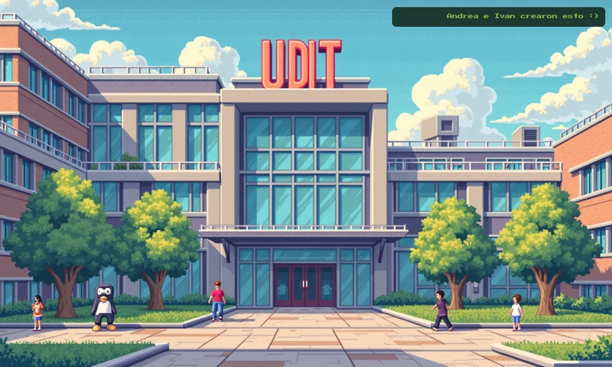

Fase 5 — Slim agresivo y v18 final
La v16 original con la base libre.debian.net pesaba 2.8 GB. Teníamos que reducirla. Fuimos purgando paquetes que no necesitábamos: fuentes CJK (japonés, chino, coreano), librerías de Qt WebEngine, libwebkit2gtk, ibus, mesa-vulkan, GCC, libgdal, dnnl, espeak, samba-libs. En varios passes.
| Versión | Tamaño | Qué cambió |
|---|---|---|
| v16 base | 2.8 GB | libre.debian.net completo |
| v16 stripped | 2.0 GB | -firefox, -docs, -locales |
| v16 slim2 | 1.2 GB | -fuentes CJK, -Qt WebEngine, -libwebkit |
| v17 | 1.2 GB | Wallpapers correctos, usuario danielsson |
| v18 final | 883 MB | Slim agresivo + glass login + panel pulido |
Fase 6 — Nueva guía del profesor: bloque seguridad y robótica (v20)
El 27 de abril 2026 el profesor publicó una nueva guía llamada "RoboSecOS". Pedía añadir herramientas de seguridad ofensiva, robótica/hardware y un menú interactivo whiptail. La guía estaba pensada para Ubuntu 24.04 + Cubic + usuario robosec, pero el profesor confirmó que se aceptaba una adaptación sobre nuestra base.
Nuestra decisión: añadir los paquetes y scripts encima de la v19 sin tocar nada del branding ni los usuarios. No tiene sentido rehacer todo el sistema para cambiar el nombre de usuario.
Escribimos el script del menú en Bash — consultamos la man page de whiptail y varios ejemplos en foros para la estructura de submenús. Empezamos con 3 submenús que luego fuimos refinando hasta que quedaron como los queríamos.
apt install -y masscan nikto hydra john hashcat aircrack-ng gobuster whois en una sola llamada falló porque nikto no existe en Debian 13 trixie. Cuando un paquete no se encuentra, apt cancela TODA la lista. No instaló nada.
for pkg in PKGS; do apt-get install -y "$pkg"; done con set +e. Así si uno falla, los demás se instalan igualmente.
Fase 7 — Kernel panic: el bug del squashfs
Este fue el error más difícil. El primer ISO v20 generado arrancaba hasta cierto punto y luego tiraba un kernel panic:
SQUASHFS error: xz decompression failed, data probably corrupt SQUASHFS error: Failed to read block 0xf8dda3c: -5 /sbin/init: error while loading shared libraries: /lib/aarch64-linux-gnu/libcrypto.so.3: cannot read file data: Input/output error Kernel panic - not syncing: Attempted to kill init! exitcode=0x00007f00
Lo curioso era que si hacíamos unsquashfs desde el sistema de archivos, los archivos se extraían perfectamente y los SHA256 eran idénticos. El problema era específico del kernel al leer bloques en tiempo de arranque.
-comp xz -Xbcj arm en mksquashfs — heredado de un script antiguo de la era Cubic (v9). El filtro BCJ-arm está pensado para ARM 32-bit. Aplicado a binarios ARM64 genera salida que unsquashfs acepta pero que el driver del kernel rechaza intermitentemente.
unsquashfs -s): compresión zstd nivel 22, bloques de 1 MB, sin filtro BCJ. Tardaba 15-20 min en 2 cores pero producía un squashfs que el kernel arm64 leía correctamente.
mksquashfs rootfs filesystem.squashfs \
-comp zstd -Xcompression-level 22 -b 1M \
-processors 2 -noappend
Fase 8 — Mejora del menú: de whiptail a fzf+chafa
El robomenu original con whiptail funcionaba, pero era básico. Lo reescribimos con fzf como selector interactivo y chafa para renderizar los iconos pixel art en la terminal. También añadimos un sistema de breadcrumb y wrappers run/run_pager que muestran exactamente qué comando se ejecuta, cuánto tarda y si terminó bien o con error.
s / r / r / s / a en lugar de los nombres completos.
04 Resumen de errores y soluciones
Tabla de todos los problemas importantes que encontramos, ordenados por el momento en que aparecieron:
| Error | Versión | Causa | Fix | Estado |
|---|---|---|---|---|
| No arranca en Parallels (pantalla negra) | v8–v14 | Ldsiz=0 en El-Torito catalog — efi.img de 32 MB (Cubic) |
Cambiar base a libre.debian.net con -isohybrid-apm-hfsplus |
[resuelto v16] |
| VirtualBox no arranca | todas | VBox arm64 solo funciona en hosts Apple Silicon con versión experimental 7.1.x | Fuera de alcance — solo soportamos Parallels y QEMU | [descartado] |
| XFCE se traba al login | v16 | xfce4-session removido por autoremove + light-locker activo + calamares en autostart | Reinstalar xfce4-session, purgar light-locker, eliminar calamares.desktop | [resuelto v17] |
| Plymouth no muestra imagen | v16 | PNG de 7.4 MB no cabe bien en initramfs | Convertir a JPG 186 KB, actualizar initramfs | [resuelto v17] |
| Login background equivocado | v16–v17 | Confusión entre las 3 imágenes: portal / hotel / UDIT building | Aclarar con capturas y reasignar cada imagen a su lugar correcto | [resuelto v18] |
| Contraseñas no funcionan | v16–v17 | chpasswd en chroot se perdía al reempaquetar | Fijar contraseñas con chpasswd y verificar /etc/shadow antes de reempaquetar | [resuelto v18] |
| apt install aborta si un paquete no existe | v20 build | nikto no está en Debian 13 trixie — apt cancela toda la lista |
Bucle por paquete con set +e para tolerar fallos individuales |
[resuelto v20] |
| Kernel panic — squashfs xz BCJ-arm | v20 (1er intento) | mksquashfs con -comp xz -Xbcj arm incompatible con kernel ARM64 6.12 |
Recompilar con zstd nivel 22, bloques 1 MB, sin filtro BCJ | [resuelto v20 final] |
| lolcat no se encuentra en PATH | v20 | Debian instala lolcat en /usr/games/, no en /usr/bin/ | Banner busca en /usr/games/, /usr/bin/, /usr/local/bin/ antes de degradar a figlet | [resuelto v20] |
| Menú robomenu muestra solo una letra por opción | v20 UX | fzf preview lateral a 55% en TTY 80 cols deja al menú sin espacio | Umbral 140 cols para preview lateral; en TTYs estrechas va arriba | [resuelto v20 UX] |
05 Cómo quedó el proyecto final
Lo que tiene el sistema
La v20 final es Debian 13 ARM64 con 1660 paquetes instalados. Arranca en XFCE con autologin para el usuario danielsson. Tiene tema Catppuccin Mocha Blue, barra de herramientas personalizada y wallpaper pixel art del edificio UDIT.
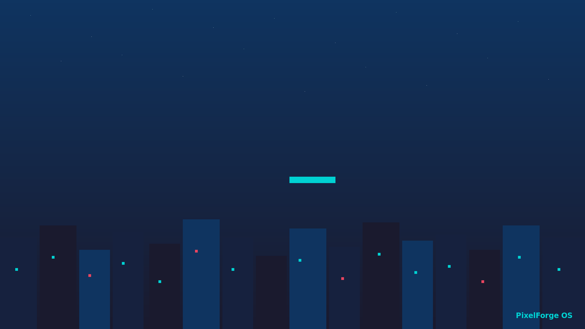
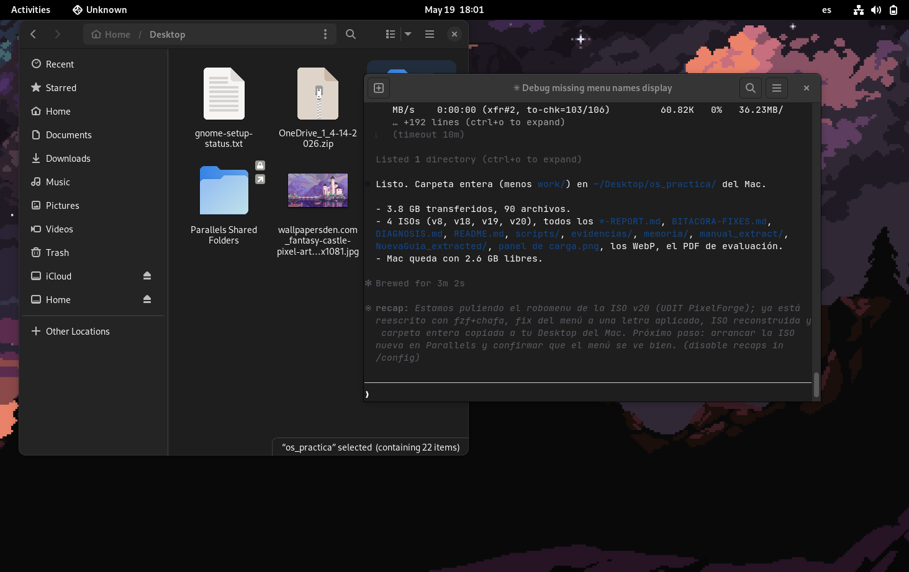
Screenshots reales del sistema arrancado
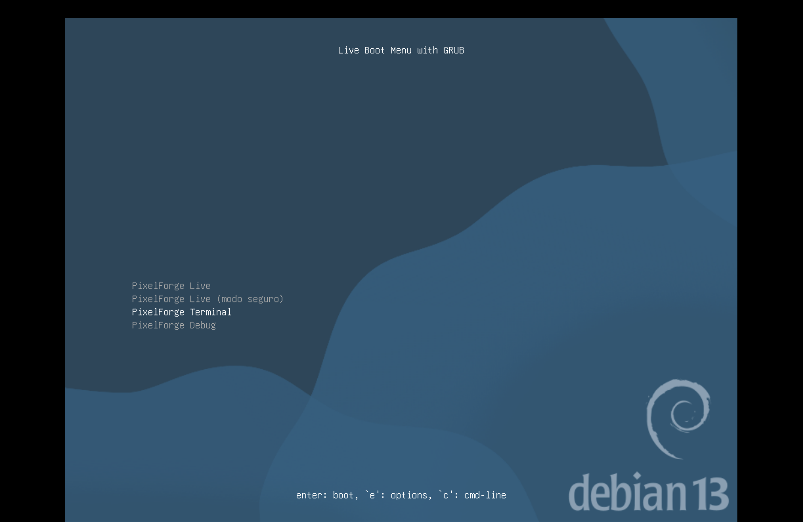
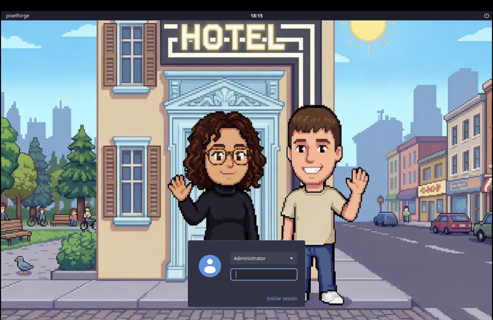
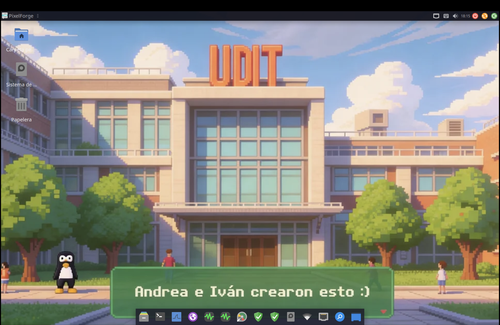
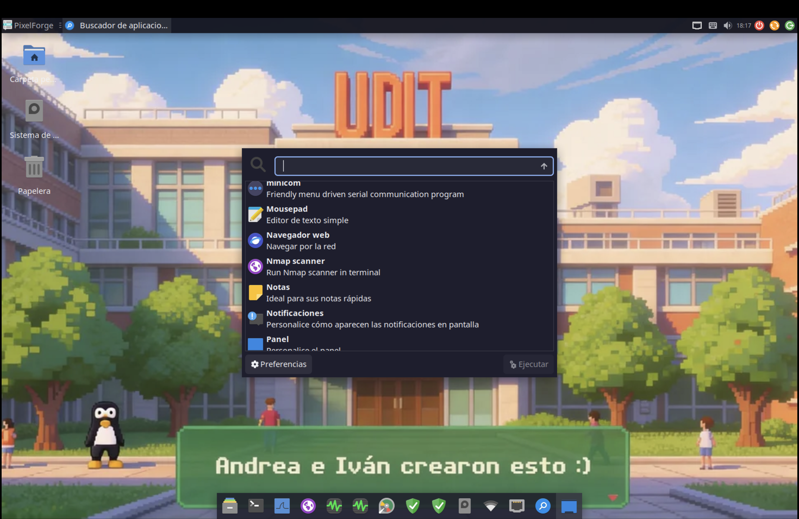
Usuarios del sistema
| Usuario | Contraseña | Rol | Grupos |
|---|---|---|---|
danielsson | root | Principal (autologin XFCE) | sudo, wireshark, audio, video, netdev, plugdev |
user | live | Secundario | sudo, wireshark, audio, video |
admin | admin | Administrador | sudo, wireshark |
root | root | Superusuario | — |
Paquetes incluidos por categoría
Historial de versiones
Primera entrega. Construida con Cubic. Arrancaba en QEMU, fallaba en Parallels.
Última iteración Cubic. Muchas herramientas instaladas pero boot en Parallels seguía roto.
Primer intento de rebuild manual. Squashfs xz roto, kernel panic. Parallels: sigue sin arrancar.
Cambio a base libre.debian.net. Fix del El-Torito Ldsiz. Por fin arranca en Parallels. 2.8 GB reducido a 1.2 GB con slimming agresivo.
Wallpapers correctos, XFCE funcional, usuario danielsson con autologin.
Primera entrega oficial. Login glass, panel dock pulido, slim final.
Refinamientos menores, base para v20.
Bloque seguridad ofensiva + robótica añadidos sobre v19. robomenu con fzf+chafa. 1660 paquetes. SHA256: 3f8a04a8…612f
Lo que NO incluimos y por qué
| Paquete pedido | Razón por la que no está |
|---|---|
nikto |
No existe en Debian 13 trixie/main. Solo estaba en bookworm 12. Se puede instalar con git clone https://github.com/sullo/nikto post-boot (ya tenemos git). |
neofetch |
Eliminado de Debian 13 — el upstream lleva archivado desde 2024. Ya tenemos fastfetch que es el reemplazo oficial. |
metasploit-framework |
No en repos Debian. Requiere instalador Rapid7, ~2 GB de descarga. Disponible post-boot con su script oficial. |
ros-jazzy-ros-base |
Solo binarios para Ubuntu 24.04. Compilar desde fuente en Debian: más de 4 horas y 5 GB. Fuera de alcance. |
arduino-cli |
No empaquetado en Debian. Instalable post-boot con su script de instalación (~100 MB). |
kicad, fritzing |
kicad pesa más de 1 GB instalado. fritzing fue eliminado de los repos Debian 13. |
07 Cómo probar la ISO
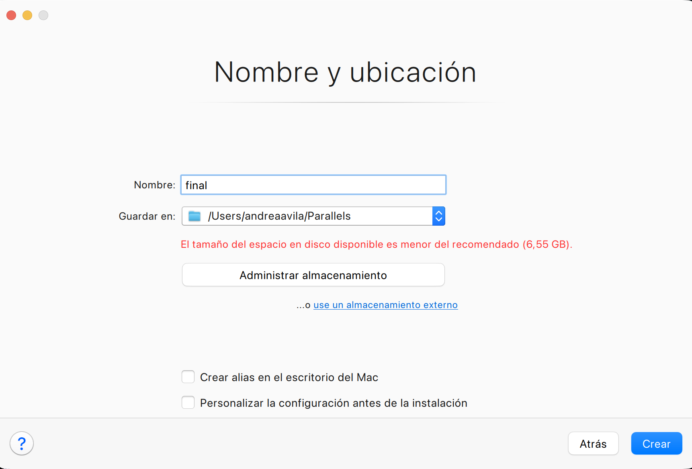
En Parallels Desktop (Apple Silicon) — lo que usamos nosotros
-
1Abrir Parallels Desktop → botón + → "Install Windows or another OS from a DVD or image file"
-
2Seleccionar
debian-udit-pixelart-arm64-v20-final.iso -
3Tipo de OS: Other Linux (ARM64)
-
4Configuración recomendada: 4 CPU, 4 GB RAM
-
5Arrancar. Verás el GRUB con 4 opciones: PixelForge Live (default), modo seguro, Terminal, Debug
-
6Login automático como
danielsson. Para el menú: abrir Terminal → escribirrobomenu
En QEMU (si no tienes Parallels)
./scripts/run_qemu.sh debian-udit-pixelart-arm64-v20-final.iso 2048
Verificar integridad
# v20 final (1.2 GB) echo "3f8a04a8f1fe6ae5e9962cf555108c669fc7b95f2a28f1aaa97148ef384e612f \ debian-udit-pixelart-arm64-v20-final.iso" | sha256sum -c
Lecciones que nos llevamos
- Cubic no sirve para ISO ARM64 que tenga que arrancar en Parallels. El efi.img de 32 MB genera Ldsiz=0.
- Para Parallels en Apple Silicon hace falta
-isohybrid-apm-hfsplusen xorriso. Ese flag no está en ninguna documentación obvvia — lo descubrimos comparando el mkisofs de la libre ISO. apt install pkg1 pkg2 pkg3es todo o nada. Si uno no existe, se cancela todo. Para listas largas usar bucle conset +e.- El filtro
-Xbcj armde xz es para ARM 32-bit. En ARM64 produce un squashfs que el kernel rechaza aunque unsquashfs lo lea bien. unsquashfs -ste dice el formato real. No asumir que el script que usaste hace lo que crees — verificar siempre.apt autoremoveen un chroot de live es peligroso. Puede eliminar xfce4-session y otros paquetes "recommended" que son necesarios para el escritorio.tput colspuede devolver un valor incorrecto en algunos contextos. Para scripts de terminal que dependen del ancho, usar las 3 fuentes: COLUMNS, stty size, tput cols.